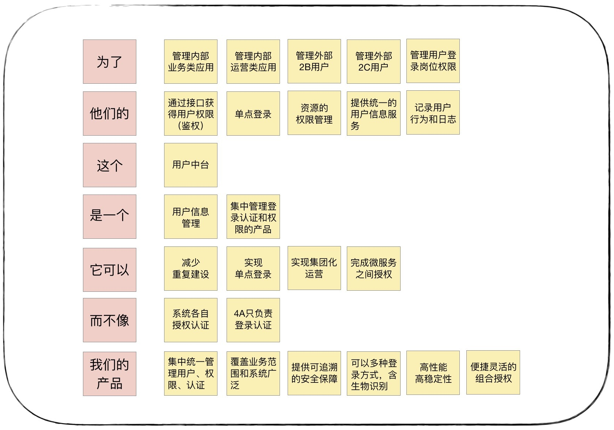
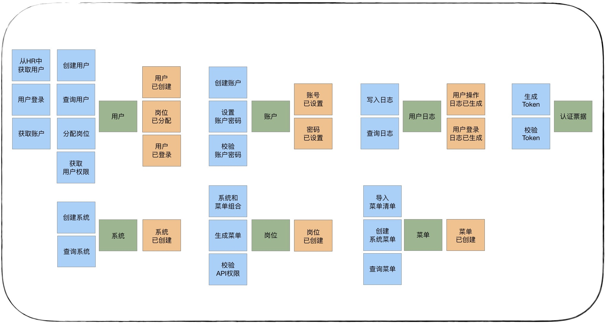

- 00 开篇词 学好了DDD，你能做什么？.md.html
- 01 领域驱动设计：微服务设计为什么要选择DDD.md.html
- 02 领域、子域、核心域、通用域和支撑域：傻傻分不清？.md.html
- 03 限界上下文：定义领域边界的利器.md.html
- 04 实体和值对象：从领域模型的基础单元看系统设计.md.html
- 05 聚合和聚合根：怎样设计聚合？.md.html
- 06 领域事件：解耦微服务的关键.md.html
- 07 DDD分层架构：有效降低层与层之间的依赖.md.html
- 08 微服务架构模型：几种常见模型的对比和分析.md.html
- 09 中台：数字转型后到底应该共享什么？.md.html
- 10 DDD、中台和微服务：它们是如何协作的？.md.html
- 11 DDD实践：如何用DDD重构中台业务模型？.md.html
- 12 领域建模：如何用事件风暴构建领域模型？.md.html
- 13 代码模型（上）：如何使用DDD设计微服务代码模型？.md.html
- 14 代码模型（下）：如何保证领域模型与代码模型的一致性？.md.html
- 15 边界：微服务的各种边界在架构演进中的作用？.md.html
- 16 视图：如何实现服务和数据在微服务各层的协作？.md.html
- 17 从后端到前端：微服务后，前端如何设计？.md.html
- 18 知识点串讲：基于DDD的微服务设计实例.md.html
- 19 总结（一）：微服务设计和拆分要坚持哪些原则？.md.html
- 20 总结（二）：分布式架构关键设计10问.md.html
- 答疑：有关3个典型问题的讲解.md.html
- 结束语 所谓高手，就是跨过坑和大海.md.html
- 捐赠
12 领域建模：如何用事件风暴构建领域模型？
你好，我是欧创新。
还记得我在 [第 01 讲] 中说过，微服务设计为什么要选择 DDD 吗？其中有一个非常重要的原因，就是采用 DDD 方法建立的领域模型，可以清晰地划分微服务的逻辑边界和物理边界。可以说，在 DDD 的实践中，好的领域模型直接关乎微服务的设计水平。因此，我认为 DDD 的战略设计是比战术设计更为重要的，也正是这个原因，我们的内容会更侧重于战略设计。
那么我们该采用什么样的方法，才能从错综复杂的业务领域中分析并构建领域模型呢？
它就是我在前面多次提到的事件风暴。事件风暴是一项团队活动，领域专家与项目团队通过头脑风暴的形式，罗列出领域中所有的领域事件，整合之后形成最终的领域事件集合，然后对每一个事件，标注出导致该事件的命令，再为每一个事件标注出命令发起方的角色。命令可以是用户发起，也可以是第三方系统调用或者定时器触发等，最后对事件进行分类，整理出实体、聚合、聚合根以及限界上下文。而事件风暴正是 DDD 战略设计中经常使用的一种方法，它可以快速分析和分解复杂的业务领域，完成领域建模。
那到底怎么做事件风暴呢？事件风暴需要提前准备些什么？又如何用事件风暴来构建领域模型呢？今天我们就来重点解决这些问题，深入了解事件风暴的全过程。
事件风暴需要准备些什么？
1. 事件风暴的参与者
事件风暴采用工作坊的方式，将项目团队和领域专家聚集在一起，通过可视化、高互动的方式一步一步将领域模型设计出来。领域专家是事件风暴中必不可少的核心参与者。很多公司可能并没有这个角色，那我们该寻找什么样的人来担当领域专家呢？
领域专家就是对业务或问题域有深刻见解的主题专家，他们非常了解业务和系统是怎么做的，同时也深刻理解为什么要这样设计。如果你的公司里并没有这个角色，那也没关系，你可以从业务人员、需求分析人员、产品经理或者在这个领域有多年经验的开发人员里，按照这个标准去选择合适的人选。
除了领域专家，事件风暴的其他参与者可以是 DDD 专家、架构师、产品经理、项目经理、开发人员和测试人员等项目团队成员。
领域建模是统一团队语言的过程，因此项目团队应尽早地参与到领域建模中，这样才能高效建立起团队的通用语言。到了微服务建设时，领域模型也更容易和系统架构保持一致。
2. 事件风暴要准备的材料
事件风暴参与者会将自己的想法和意见写在即时贴上，并将贴纸贴在墙上的合适位置，我们戏称这个过程是“刷墙”。所以即时贴和水笔是必备材料，另外，你还可以准备一些胶带或者磁扣，以便贴纸随时能更换位置。
值得提醒一下的是，在这个过程中，我们要用不同颜色的贴纸区分领域行为。如下图，我们可以用蓝色表示命令，用绿色表示实体，橙色表示领域事件，黄色表示补充信息等。补充信息主要用来说明注意事项，比如外部依赖等。颜色并不固定，这只是我的习惯，团队内统一才是重点。

3. 事件风暴的场地
什么样的场地适合做事件风暴呢？是不是需要跟组织会议一样，准备会议室、投影，还有椅子？这些都不需要！你只需要一堵足够长的墙和足够大的空间就可以了。墙是用来贴纸的，大空间可以让人四处走动，方便合作。撤掉会议桌和椅子的事件风暴，你会发现参与者们的效率更高。
事件风暴的发明者曾经建议要准备八米长的墙，这样设计就不会受到空间的限制了。当然，这个不是必要条件，看各自的现实条件吧，不要让思维受限就好。
4. 事件风暴分析的关注点
在领域建模的过程中，我们需要重点关注这类业务的语言和行为。比如某些业务动作或行为（事件）是否会触发下一个业务动作，这个动作（事件）的输入和输出是什么？是谁（实体）发出的什么动作（命令），触发了这个动作（事件）…我们可以从这些暗藏的词汇中，分析出领域模型中的事件、命令和实体等领域对象。
如何用事件风暴构建领域模型？
领域建模的过程主要包括产品愿景、业务场景分析、领域建模和微服务拆分与设计这几个重要阶段。下面我以用户中台为例，介绍一下如何用事件风暴构建领域模型。
1. 产品愿景
产品愿景的主要目的是对产品顶层价值的设计，使产品目标用户、核心价值、差异化竞争点等信息达成一致，避免产品偏离方向。
产品愿景的参与角色：领域专家、业务需求方、产品经理、项目经理和开发经理。
在建模之前，项目团队要思考这样两点：
用户中台到底能够做什么？
它的业务范围、目标用户、核心价值和愿景，与其它同类产品的差异和优势在哪里？
这个过程也是明确用户中台建设方向和统一团队思想的过程。参与者要对每一个点（下图最左侧列的内容）发表意见，用水笔写在贴纸上，贴在黄色贴纸的位置。这个过程会让参与者充分发表意见，最后会将发散的意见统一为通用语言，建立如下图的产品愿景墙。如果你的团队的产品愿景和目标已经很清晰了，那这个步骤你可以忽略。

2. 业务场景分析
场景分析是从用户视角出发的，根据业务流程或用户旅程，采用用例和场景分析，探索领域中的典型场景，找出领域事件、实体和命令等领域对象，支撑领域建模。事件风暴参与者要尽可能地遍历所有业务细节，充分发表意见，不要遗漏业务要点。
场景分析的参与角色：领域专家、产品经理、需求分析人员、架构师、项目经理、开发经理和测试经理。
用户中台有这样三个典型的业务场景：
第一个是系统和岗位设置，设置系统中岗位的菜单权限；
第二个是用户权限配置，为用户建立账户和密码，设置用户岗位；
第三个是用户登录系统和权限校验，生成用户登录和操作日志。
我们可以按照业务流程，一步一步搜寻用户业务流程中的关键领域事件，比如岗位已创建，用户已创建等事件。再找出什么行为会引起这些领域事件，这些行为可能是一个或若干个命令组合在一起产生的，比如创建用户时，第一个命令是从公司 HR 系统中获取用户信息，第二个命令是根据 HR 的员工信息在用户中台创建用户，创建完用户后就会产生用户已创建的领域事件。当然这个领域事件可能会触发下一步的操作，比如发布到邮件系统通知用户已创建，但也可能到此就结束了，你需要根据具体情况来分析是否还有下一步的操作。
场景分析时会产生很多的命令和领域事件。我用蓝色来表示命令，用橙色表示领域事件，用黄色表示补充信息，比如用户信息数据来源于 HR 系统的说明。

3. 领域建模
领域建模时，我们会根据场景分析过程中产生的领域对象，比如命令、事件等之间关系，找出产生命令的实体，分析实体之间的依赖关系组成聚合，为聚合划定限界上下文，建立领域模型以及模型之间的依赖。领域模型利用限界上下文向上可以指导微服务设计，通过聚合向下可以指导聚合根、实体和值对象的设计。
领域建模的参与角色：领域专家、产品经理、需求分析人员、架构师、项目经理、开发经理和测试经理。
具体可以分为这样三步。
第一步：从命令和事件中提取产生这些行为的实体。用绿色贴纸表示实体。通过分析用户中台的命令和事件等行为数据，提取了产生这些行为的用户、账户、认证票据、系统、菜单、岗位和用户日志七个实体。

第二步：根据聚合根的管理性质从七个实体中找出聚合根，比如，用户管理用户相关实体以及值对象，系统可以管理与系统相关的菜单等实体等，可以找出用户和系统等聚合根。然后根据业务依赖和业务内聚原则，将聚合根以及它关联的实体和值对象组合为聚合，比如系统和菜单实体可以组合为“系统功能”聚合。按照上述方法，用户中台就有了系统功能、岗位、用户信息、用户日志、账户和认证票据六个聚合。
第三步：划定限界上下文，根据上下文语义将聚合归类。根据用户域的上下文语境，用户基本信息和用户日志信息这两个聚合共同构成用户信息域，分别管理用户基本信息、用户登录和操作日志。认证票据和账户这两个聚合共同构成认证域，分别实现不同方式的登录和认证。系统功能和岗位这两个聚合共同构成权限域，分别实现系统和菜单管理以及系统的岗位配置。根据业务边界，我们可以将用户中台划分为三个限界上下文：用户信息、认证和权限。

到这里我们就完成了用户中台领域模型的构建了。那由于领域建模的过程中产生的领域对象实在太多了，我们可以借助表格来记录。

4. 微服务拆分与设计
我们在基础篇讲过，原则上一个领域模型就可以设计为一个微服务，但由于领域建模时只考虑了业务因素，没有考虑微服务落地时的技术、团队以及运行环境等非业务因素，因此在微服务拆分与设计时，我们不能简单地将领域模型作为拆分微服务的唯一标准，它只能作为微服务拆分的一个重要依据。
微服务的设计还需要考虑服务的粒度、分层、边界划分、依赖关系和集成关系。除了考虑业务职责单一外，我们还需要考虑将敏态与稳态业务的分离、非功能性需求（如弹性伸缩要求、安全性等要求）、团队组织和沟通效率、软件包大小以及技术异构等非业务因素。
微服务设计建议参与的角色：领域专家、产品经理、需求分析人员、架构师、项目经理、开发经理和测试经理。
用户中台微服务设计如果不考虑非业务因素，我们完全可以按照领域模型与微服务一对一的关系来设计，将用户中台设计为：用户、认证和权限三个微服务。但如果用户日志数据量巨大，大到需要采用大数据技术来实现，这时用户信息聚合与用户日志聚合就会有技术异构。虽然在领域建模时，我们将他们放在一个了领域模型内，但如果考虑技术异构，这两个聚合就不适合放到同一个微服务里了。我们可以以聚合作为拆分单位，将用户基本信息管理和用户日志管理拆分为两个技术异构的微服务，分别用不同的技术来实现它们。
总结
今天我们讲了事件风暴的设计方法以及如何用事件风暴来构建领域模型。事件风暴是一种不同于传统需求分析和系统设计的方法，最好的学习方法就是找几个业务场景多做几次。
综合我的经验，一般来说一个中型规模的项目，领域建模的时间大概在两周左右，这与我们传统的需求分析和系统设计的时间基本差不多。但是如果在领域建模的过程中，团队成员全员参与，在项目开发之前就建立了共同语言，这对于后续的微服务设计与开发是很有帮助的，时间成本也可以视情况降低。
其实我也了解到了，很多开发人员在初次学习 DDD 时，似乎并不太关心领域建模，而只是想学学 DDD 的战术设计思想，快速上手，开发微服务。我想这是对 DDD 的一个误解，这已经偏离了 DDD 的核心设计思想，即先有边界清晰的领域模型，才能设计出清晰的微服务边界，这两个阶段一前一后是刚需，我们不能忽略。
© 2019 - 2023 Liangliang Lee. Powered by gin and hexo-theme-book.